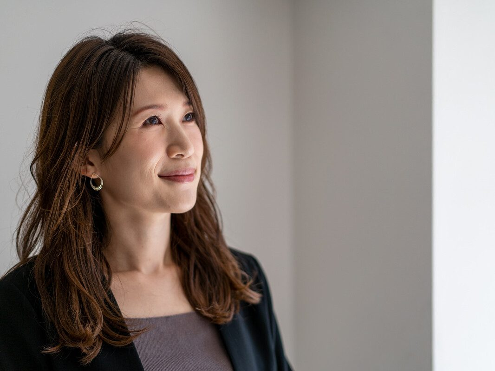

社外取締役・社外役員のマッチングサービス比較6選｜登録先と報酬の実態
部長・執行役員のまま、別の会社の取締役会に座る道があります。本業を辞めずに就ける社外取締役・社外役員です。候補者として登録できる6つのサービスを同じ列で比べ、報酬と独立性の要件まで含めて、どこに登録すべきかを結論として書きました。

部長・執行役員が役員を目指す道は、社内で昇進するか、転職して役員ポジションに就くかの2つだと思われがちです。実はもう1つあります。本業を続けたまま、別の会社の社外取締役・社外監査役に就く道です。中央値で年600万円の報酬が本業の上に乗り、取締役会の内側を経験できます。
この記事では、社外取締役・社外役員の候補者として登録・相談できるサービスを、形態・対象・登録条件・費用・公開数字の同じ列で比較しました。掲載したのは、2026年10月21日に公式サイトで社外役員の紹介を扱っていると確認できたサービスだけです。報酬の実態、兼任数の考え方、独立性の要件も、調査と条文に沿って整理しています。
結論。部長・執行役員が社外役員を狙うなら、登録型のデータベースを持つサービス2つと、専門性に合うサービス1つを組み合わせます。事業会社の役員・部長経験が中心ならパソナJOB HUBとEXE、士業の資格があるならEXE、経営経験や専門領域を持つ女性ならプロフェッショナルバンクを加えます。現役の取締役・執行役員クラスは、リクルートエグゼクティブエージェントの社外取締役サーチにも相談しておきます。報酬は1社あたり中央値600万円（労務行政研究所、2024年）なので、本業を辞めずに1〜2社を兼ねるのが現実的な設計です。
比較表：社外取締役・社外役員のマッチングサービス6選（2026年10月21日 各社公式サイトで確認）
形態の分け方は次のとおりです。「データベース型」は候補者が登録し、企業の依頼に合わせて登録者から紹介する仕組み。「サーチ型」は企業の依頼を受けて、登録の有無に関係なく候補者を探す仕組み。「公募・直接契約型」は企業が案件を掲載し、候補者が応募または企業からスカウトを受けて直接契約する仕組みです。企業側の費用は多くが成功報酬型で、候補者側の費用は下の表のとおりです。
| サービス名（運営） | 形態 | 対象（候補者の層） | 個人の登録条件 | 個人の費用 | 公開数字（時点） |
|---|---|---|---|---|---|
| EXE［エグゼ］（株式会社アシロ） | データベース型（専任エージェントが企業に紹介） | 社外取締役、非常勤・常勤監査役。弁護士等の士業が46.6%、女性役員経験者が20.0% | 実務経験のある弁護士・公認会計士、女性役員経験者を歓迎。掲載人材の基準は「独立性の担保、兼務社数5社未満、経験10年以上」等 | 公式に記載なし | 登録者2,000名以上（2026年8月18日） |
| パソナJOB HUB 社外取締役・監査役紹介（株式会社パソナJOB HUB） | データベース型＋サーチ型 | 役員経験者が中心。プロ経営者、社外役員経験のある大学教授、省庁関係者など | 公式に記載なし（登録後に面談で経歴を確認） | 無料 | 登録者約5,000名、導入実績300社以上（時点記載なし） |
| プロフェッショナルバンク 女性社外取締役・監査役の紹介（株式会社プロフェッショナルバンク） | サーチ型（登録者を募る方式ではない） | 経営経験や専門領域（大学教授、弁護士、会計士、IR・法務管掌役員経験者など）を持つ女性。男性候補・常勤の依頼にも対応 | 公式に記載なし（個人向けの相談窓口あり） | 公式に記載なし | 上場企業の現役女性社外役員のデータベース約3,000名（時点記載なし） |
| リクルートエグゼクティブエージェント 社外取締役・監査役サーチ（株式会社リクルートエグゼクティブエージェント） | サーチ型（リテーナーサーチ） | 各業界の第一線で活躍した人材。コア層は現職の取締役・執行役員・部門責任者 | 経営幹部・エグゼクティブ層向けの個人登録フォームあり | 公式に記載なし | 経営層・エグゼクティブ層の紹介・決定実績5,000名以上（2001年創業からの累計、時点記載なし） |
| KENJINS 社外取締役マッチング（プライドワークス株式会社） | 公募・直接契約型＋成功報酬型の紹介 | 上場企業の役員・CxO経験者、士業、大学教授など。40〜60代が中心 | 公式に記載なし | 公式に記載なし（顧問報酬は100%を顧問に支払うと記載） | 大手上場企業の経営幹部等の登録3,000名以上（時点記載なし） |
| 日本監査役協会 役員人材バンク（公益社団法人日本監査役協会） | 協会会員向けの登録制度 | 協会会員の監査役等 | 監査役等を置く法人の会員として入会していること | 法人会員は入会金5万円、年会費1人目10万円（2人目以降6万円） | 公式に記載なし |
※各社公式サイト（2026年10月21日確認）による。企業側の費用は、EXE・プロフェッショナルバンクが完全成功報酬型、パソナJOB HUBが基本的に成果報酬型と公式に記載。料率は各社とも問い合わせ制です。
18問・約5分。事業・経営・組織・変革・専門の5軸で役員候補度をスコア化し、役員の目標プロファイルとの差と、次に埋める経験まで表示します。
無料で役員候補度を診断する （約5分） ›社外役員は「本業を続けながら役員になる」第3の道
部長・執行役員から役員になる道を並べると、次の3つになります。
| 道 | なる役職 | 本業 | 報酬の目安 |
|---|---|---|---|
| 1. 社内で昇進する | 自社の取締役・執行役員 | 続ける | 取締役（兼務除く）平均2,054万円 |
| 2. 転職して役員になる | 他社の常勤取締役・CxO | 辞める | 同上（規模で大きく変わる） |
| 3. 社外役員に就く | 他社の社外取締役・社外監査役 | 続ける | 社外取締役 平均746万円・中央値600万円 |
出典：労務行政研究所「役員の報酬等に関する実態調査」（2024年）
3つ目の道の価値は、報酬だけではありません。執行役員は会社法上の役員ではなく、取締役会の外にいます。社外取締役に就けば、会社法上の役員として取締役会で議決権を持ち、指名・報酬・監査の議論に加わります。部長・執行役員のまま「取締役会の内側」を経験できるのは、この道だけです。執行役員の位置づけは執行役員とは（取締役との違い）で詳しく説明しています。
需要も増えています。第一ライフ資産運用経済研究所によると、プライム市場で独立社外取締役が過半数の会社は2026年8月時点で30.3%です。2014年の東証一部では1.4%でした。コーポレートガバナンス・コード原則4-10は、プライム市場の会社に独立社外取締役を3分の1以上置くことを求めています。
一方で、席は無限にはありません。プライム上場会社は2025年8月の1,618社から2026年8月の1,551社に減りました。席の数が増えているのは、1社あたりの社外取締役が増えているからです。だから、登録して待つだけでは声はかかりません。自分がどの会社のどの席に合うかを、先に言葉にしておく必要があります。
社外取締役の報酬は平均746万円・中央値600万円（労務行政研究所 2024年）
| 区分 | 人数 | 平均 | 中央値 |
|---|---|---|---|
| 社外取締役 | 398人 | 746万円 | 600万円 |
| 社外監査役 | 172人 | 672万円 | 546万円 |
| （参考）取締役（常勤・兼務除く） | — | 2,054万円 | 1,800万円 |
| （参考）常勤監査役 | — | 1,455万円 | 1,340万円 |
出典：労務行政研究所「役員の報酬等に関する実態調査」（2024年、上場企業中心の回答127社）
中央値の600万円は、部長級の所定内給与63.58万円（厚生労働省、2025年）の約9.4か月分です。月1回程度の取締役会と、その準備、委員会への出席に対する報酬です。時間あたりで見れば本業より高いことが多いです。ただ年収で見ると、800〜1,500万円の部長の本業の半分前後です。
平均が中央値より146万円高いのは、大企業の一部で1,000万円を超える報酬を出しているためです。上場前の会社や中小企業の社外取締役は、これより低い水準になります。KENJINSに掲載された公募案件の一例では、月1日勤務を基本に月額30万〜100万円と示されています。
報酬の決め方は常勤の役員と同じで、定款か株主総会の決議で定めた枠の中で決まります（会社法361条）。社外取締役は、監督する立場の独立性を保つために、固定報酬だけの設計が一般的です。
本業の上に乗せると、手取りの計算が変わる
社外役員の報酬は、所得税法上は給与所得です。本業の給与と合わせて2か所から給与を受けることになり、従たる給与が年20万円を超えると確定申告が必要になります。報酬600万円が丸ごと上乗せになるわけではなく、本業の所得と合算されて税率が上がる点も計算に入れておきます。
兼任数の考え方：法律に上限はないが、1〜2社が現実的
会社法には、社外取締役が兼任できる会社数の上限はありません。代わりに、コーポレートガバナンス・コードの補充原則4-11②が、他の上場会社の役員を兼ねる場合は「合理的な範囲にとどめるべき」とし、上場会社に兼任状況を毎年開示するよう求めています。
実際の目安は、紹介会社と投資家の側にあります。EXEは掲載人材の基準として「兼務社数5社未満」を挙げています。プロフェッショナルバンクの2023年の調査では、一都三県の上場企業の女性社外役員のうち、複数社を兼任している人は28.5%でした。7割以上は1社です。
編集部の結論は、本業を続ける部長・執行役員なら1〜2社までです。取締役会が月1回あれば、2社で月2回の会議と、それぞれの資料の読み込みが加わります。決算期や不祥事の対応が重なると、本業の繁忙期とぶつかります。3社以上を兼ねている人の多くは、本業を退いた元経営者か、時間の融通が利く士業です。
独立性の要件：会社法2条15号と東証の独立性基準
社外取締役になるには、会社法上の「社外」の要件と、上場会社であれば東証の「独立役員」の基準を満たす必要があります。この2つは別物です。
会社法2条15号の社外取締役の要件
会社法2条15号は、社外取締役の要件を次のように定めています。要約すると、その会社のグループの業務を執行してこなかった人で、親会社側の人でも、経営陣の親族でもないことです。
- その会社と子会社の業務執行取締役・執行役・支配人などの使用人でなく、就任前10年間もそうでなかったこと（イ）
- 就任前10年以内に、その会社か子会社の取締役・会計参与・監査役だった人は、その就任前10年間に業務執行取締役等でなかったこと（ロ）
- 親会社等（自然人）でなく、親会社等の取締役・執行役・支配人その他の使用人でもないこと（ハ）
- 兄弟会社の業務執行取締役等でないこと（ニ）
- その会社の取締役・執行役・支配人などの重要な使用人、または親会社等（自然人）の配偶者・2親等内の親族でないこと（ホ）
社外監査役の要件は、会社法2条16号に同じ趣旨で定められています。部長・執行役員にとって大事なのは、自分が勤める会社とそのグループ会社の社外取締役には就けないということです。就任先は必ず、勤務先のグループの外になります。
東証の独立役員の基準
上場会社は、一般株主と利益相反が生じるおそれのない「独立役員」を1名以上確保しなければなりません（東証 有価証券上場規程436条の2）。独立性の判断は「上場管理等に関するガイドライン」に沿って行われ、主に次の人は独立性がないと判断されやすくなります。
- 親会社や兄弟会社の業務執行者
- その会社を主要な取引先とする者、その会社の主要な取引先、またはそれらの業務執行者
- 役員報酬以外に、その会社から多額の金銭などを得ているコンサルタント・会計専門家・法律専門家
- 最近まで上のいずれかに当たっていた人、またはこれらの人の近親者
さらに各社は、コーポレートガバナンス・コード原則4-9に沿って、独自の独立性判断基準を定めて開示しています。部長が注意すべきなのは「主要な取引先」です。勤務先が就任先の大口の取引先だと、会社法上の社外取締役にはなれても、独立役員としては数えられないことがあります。紹介会社に登録するときは、勤務先の主要な取引先を先に伝えておくと、話が早く進みます。
編集部の結論：社外役員の席は「勤務先のグループの外」で「勤務先と大きな取引がない会社」にあります。登録の前に、勤務先の取引先と競合先を書き出し、就けない会社を先に除いておくと、紹介会社との面談で話が具体的になります。
各サービスの特徴（同じ型で比較）
EXE［エグゼ］
- 社外取締役・監査役に特化したマッチングサービス
- 登録者2,000名以上（2026年8月18日）。2022年5月の200名から約4年で10倍
- 弁護士・公認会計士などの士業が46.6%、女性役員経験者が20.0%
EXEは、弁護士ポータルなどを運営する株式会社アシロのサービスです。社外取締役、非常勤監査役、常勤監査役の選任を企業から受け、建築・建設、金融、IT／Web、メディカル、IPO／上場などの専門分野ごとに、専任エージェントが候補者を紹介します。企業側は就任後に支払う完全成功報酬型です。IPO準備企業向けの紹介パックも用意されています。
登録希望者の入力項目には、保有資格（弁護士・公認会計士・税理士など）と社外取締役の経験の有無があります。資格や経験がなくても、業務への理解がある人は積極的に採用すると公式に書かれています。
- 弁護士・公認会計士・税理士の資格を持つ部長・管理部門の責任者
- IPO準備企業の社外取締役・監査役に関心がある人
- 非常勤だけでなく常勤監査役も選択肢に入れたい人
| 運営 | 株式会社アシロ（有料職業紹介事業 13-ユ-313782） |
|---|---|
| 形態 | データベース型（専任エージェントが紹介） |
| 対象ポジション | 社外取締役、非常勤監査役、常勤監査役 |
| 企業側の費用 | 完全成功報酬（料率は問い合わせ） |
| 公開数字 | 登録者2,000名以上（2026年8月18日）、士業46.6%、女性役員経験者20.0%（集計時点の記載なし） |
パソナJOB HUB 社外取締役・監査役紹介
- 登録者データベース約5,000名、導入実績300社以上
- データベースからの紹介と、データベース外も探すサーチ型の両方
- 個人向けのサービスはすべて無料
パソナグループのパソナJOB HUBは、社外取締役・監査役の紹介を、登録者データベースからの紹介とサーチ型の2つで行っています。データベースからの紹介では、提案まで約1週間、選任まで最短約2か月と公式に書かれています。企業からの相談は半年から1年前に始まることが多いとされ、株主総会の時期から逆算して動く世界です。
個人の登録は、プロ人材・社外役員・エグゼクティブ転職・地方創生の4区分に分かれ、複数登録もできます。登録後にインタビュー・面談で経歴や得意分野を確認し、案件の相談に進む流れです。
- 事業会社で役員・執行役員を経験した人
- 社外役員と並行して、顧問やプロ人材としての仕事も検討したい人
- 費用をかけずに登録して、面談で自分の売り方を整理したい人
| 運営 | 株式会社パソナJOB HUB |
|---|---|
| 形態 | データベース型＋サーチ型 |
| 個人の費用 | 無料 |
| 企業側の費用 | 基本的に成果報酬型（料金は問い合わせ） |
| 公開数字 | 登録者約5,000名、導入実績300社以上、紹介可能な企業4,000社以上（時点記載なし） |
プロフェッショナルバンク 女性社外取締役・監査役の紹介
- 上場企業の現役女性社外役員のデータベース約3,000名
- 登録を募らず、企業ごとに候補者を探すサーチ型
- 女性社外役員の市場を独自に集計・公表している
プロフェッショナルバンクは、経営人材と専門職のヘッドハンティング会社です。女性の社外取締役・監査役の紹介を本格的に手がけ、企業の依頼ごとにオーダーメイドで候補者を探します。サーチで面談できた人の約9割は社外役員の経験者だと公式に書かれていますが、未経験の人も対象です。男性候補や常勤の取締役・監査役の依頼にも対応しています。
同社の2023年12月の発表では、一都三県の上場企業の女性社外役員は延べ2,357人で、1年で1.2倍になりました。プライム市場では83.8%の企業に女性社外役員がいます。年代は50代35.3%、60代34.5%、40代20.4%です。経験業界は事業会社（金融以外）28.7%、弁護士・法律事務所21.7%、コンサルファーム16.6%でした。事業会社の出身者が最も多いという点は、部長・執行役員にとって参考になる数字です。
- 事業会社で部長・執行役員以上を務めてきた女性
- IR・法務・財務など、管掌役員クラスの専門領域を持つ人
- 登録して待つより、ヘッドハンターから声がかかる形を望む人
| 運営 | 株式会社プロフェッショナルバンク |
|---|---|
| 形態 | サーチ型（オーダーメイド） |
| 企業側の費用 | 完全成功報酬型（プロジェクト設計・見積りは無料） |
| 個人の費用 | 公式に記載なし |
| 公開数字 | 現役女性社外役員のデータベース約3,000名（時点記載なし）、首都圏・上場企業の女性社外役員2,039名（2025年3月時点の同社分析） |
リクルートエグゼクティブエージェント 社外取締役・監査役サーチ
- リクルートグループのエグゼクティブサーチ会社（2001年創業）
- 社外取締役・監査役をリテーナーサーチで探す
- 非常勤顧問・アドバイザーの紹介も行う
リクルートエグゼクティブエージェントは、経営幹部・エグゼクティブの紹介に特化した会社です。サービスは成功報酬型の人材紹介、事業領域と技術領域のリテーナーサーチ、社外取締役・監査役のリテーナーサーチ、非常勤顧問・アドバイザー紹介に分かれています。公式トップには、創業からの経営層・エグゼクティブ層の紹介・決定実績5,000名以上とあります。
リテーナーサーチは、企業から着手金を受けて候補者を探す方式です。社外取締役の席は、企業の依頼を受けたコンサルタントが候補者に直接声をかけて埋まることが多くなります。個人は登録フォームから経歴を伝え、サーチの候補に入っておく使い方です。
- 現職の取締役・執行役員・部門責任者
- 常勤の役員転職と社外役員を、同じ相談先でまとめて考えたい人
- 製造業・ハイテクなど技術領域の経営経験がある人
| 運営 | 株式会社リクルートエグゼクティブエージェント |
|---|---|
| 形態 | サーチ型（リテーナーサーチ） |
| 個人の登録 | 経営幹部・エグゼクティブ層向けの登録フォーム |
| 企業側の費用 | 公式に記載なし |
| 公開数字 | 紹介・決定実績5,000名以上（2001年創業からの累計、時点記載なし） |
KENJINS 社外取締役マッチング
- 顧問マッチングから派生した社外取締役のサービス
- 企業が案件を掲載し、応募とスカウトの両方で決まる
- 企業と候補者が直接契約し、報酬は企業が直接支払う
KENJINSは、プライドワークス株式会社が2013年から運営する顧問マッチングのサービスです。社外取締役マッチングでは、企業が社外取締役の案件を掲載し、候補者は応募するか、企業からダイレクトスカウトを受けます。別に、企業の経営課題をヒアリングして候補者を選ぶ成功報酬型の紹介もあります。登録者の層は上場企業の役員・CxO経験者、士業、大学教授などで、40〜60代が中心とされています。
掲載されている公募案件の一例は、月1日勤務を基本に月額30万〜100万円、契約期間の目安2〜3年です。応募条件には、会社法2条15号に沿った社外要件がそのまま書かれています。
- 案件の中身を見て、自分から応募したい人
- 上場企業より、成長企業・中小企業の社外取締役に関心がある人
- 顧問としての仕事もあわせて探したい人
| 運営 | プライドワークス株式会社 |
|---|---|
| 形態 | 公募・直接契約型＋成功報酬型の紹介 |
| 個人の費用 | 公式に記載なし（顧問報酬は100%を顧問に支払うと記載） |
| 企業側の費用 | 紹介は成功報酬型（金額は公式に記載なし） |
| 公開数字 | 大手上場企業の経営幹部等の登録3,000名以上（時点記載なし） |
日本監査役協会 役員人材バンク
- 監査役・監査等委員などの職能団体
- 会員の特典として、役員候補者として役員人材バンクに登録できる
- 研修・講演会・相談室など、就任後の学びの場もある
公益社団法人日本監査役協会は、監査役・監査等委員・監査委員などの団体です。会員の特典の一つに「役員人材バンクへの登録（役員候補者として）」があります。入会できるのは、監査役等を選任している会社などの法人会員と、その法人に所属する監査役等の個人会員です。
- すでに自社や子会社で監査役・監査等委員を務めている人
- 常勤監査役の次に、他社の社外監査役を考えている人
- 監査の実務と最新の論点を継続して学びたい人
| 運営 | 公益社団法人日本監査役協会 |
|---|---|
| 形態 | 協会会員向けの登録制度 |
| 対象 | 会員の監査役等 |
| 費用 | 法人会員 入会金5万円、年会費1人目10万円・2人目以降6万円 |
| 公開数字 | 公式に記載なし |
立場別のおすすめ：どこに登録するか
| 立場 | 最初に登録・相談 | あわせて使う |
|---|---|---|
| 事業会社の執行役員・役員経験者 | パソナJOB HUB | リクルートエグゼクティブエージェント、EXE |
| 事業会社の部長（役員経験なし） | EXE | パソナJOB HUB、KENJINS（成長企業の公募） |
| 弁護士・公認会計士・税理士の資格がある | EXE | KENJINS |
| 経営経験・専門領域を持つ女性 | プロフェッショナルバンク | EXE、パソナJOB HUB |
| IPO準備企業に関わりたい | EXE | パソナJOB HUB |
| すでに監査役・監査等委員 | 日本監査役協会 役員人材バンク | EXE（常勤・非常勤監査役） |
部長（役員経験なし）は「非上場・IPO準備」の席から入る
役員経験のない部長が、いきなり上場企業の独立社外取締役に選ばれることは多くありません。日本総研の2025年度の調査では、男性役員・女性役員とも60〜64歳が最多です。社外取締役の主流は、役員を経験した60代です。
部長が入りやすいのは、IPO準備企業や成長企業の社外取締役・監査役です。これらの会社は、上場審査に向けて管理体制や事業の専門性を補う人を求めています。営業、IT、人事、財務など、自分の領域で会社の仕組みを作った経験があれば、候補になり得ます。EXEのIPO向けの紹介や、KENJINSの公募案件がこの入口にあたります。
経営経験のある女性は、需要が供給を上回っている
日本総研の調査では、上場企業の社外役員に占める女性は27.4%、社内役員では3.7%です。プロフェッショナルバンクの調査では、プライム市場の83.8%の企業に女性社外役員がいます。求められる経歴の基準は男女で同じで、経営経験か専門領域です。違うのは、その基準を満たす人の数に対して、企業の需要が大きいという点です。事業会社で部長以上を務めた女性は、早めに登録しておく価値があります。
本業を続けながら就任するときの5つの確認
1. 勤務先の就業規則と兼業の許可
社外役員への就任は、勤務先から見れば兼業です。就業規則で兼業が許可制になっている会社が多く、就任前に勤務先の承認が要ります。承認の手続きに数か月かかる会社もあるため、紹介会社に登録した時点で人事に確認しておきます。
2. 競業と利益相反
取締役は、就任先の事業と同じ種類の取引を自分や第三者のために行うとき、取締役会などの承認が必要です（会社法356条）。勤務先が就任先の競合だと、本業の仕事そのものがこの規制に触れるおそれがあります。勤務先の競合は、就任先の候補から外しておきます。詳しくは役員の競業避止義務と転職で解説しています。
3. インサイダー取引規制
上場会社の役員は、金融商品取引法166条の「会社関係者」に当たります。就任先の重要事実を知った状態でその会社の株を売買すると、規制の対象になります。就任先と勤務先の両方で、未公表の情報を持つ立場になることを意識しておきます。
4. 責任と、責任限定契約・D&O保険
社外取締役も、任務を怠れば会社への損害賠償責任（会社法423条）と、第三者への責任（同429条）を負います。社外取締役などの非業務執行取締役は、定款の定めがあれば会社と責任限定契約を結べます（同427条）。会社が役員のために掛ける役員等賠償責任保険（D&O保険）の契約も、会社法430条の3で手続きが定められています。就任前に、この2つがあるかを必ず確認します。
5. 任期と時間の見積もり
取締役の任期は原則2年です（会社法332条）。会社法363条2項により、代表取締役などは3か月に1回以上、取締役会に職務の状況を報告しなければなりません。取締役会が少なくとも3か月に1回は開かれるということです。月1回開く会社なら、年12回の会議と事前の資料読み込み、委員会への出席を本業の外に確保します。
登録の前の準備：日本取締役協会の研修
社外取締役の紹介会社の面談では、取締役会で何を見るのかを自分の言葉で話せるかが問われます。その準備として、一般社団法人日本取締役協会の研修があります。登録先ではありませんが、受講歴は経歴書に書けます。
| 研修名 | 対象 | 形式 | 受講料（税込） |
|---|---|---|---|
| 社外取締役トレーニングBASIC（オンデマンド） | 社外取締役・執行役員とその候補者 | 動画7日分（本編は約6時間40分）、視聴期間6か月、全講義視聴で日英の修了証 | 一般99,000円／会員77,000円 |
| 経営幹部のためのコーポレートガバナンス研修2026 | 取締役（社内・社外）、執行役員、部長級の管理職とその候補者 | 通学（リモート併用）全8回、定員30名、8回中5回以上の出席で修了証 | 一般440,000円／会員330,000円 |
出典：日本取締役協会 公式サイト（2026年10月21日確認）。経営幹部のためのコーポレートガバナンス研修2026は定員に達し、申込を終了しています。
部長級を対象に含む研修があるのは、社外役員の候補として部長層が見られ始めている表れでもあります。編集部では、まずオンデマンドの基礎講座で取締役会の論点をつかみ、そのうえで紹介会社の面談に臨む順番を勧めます。
常勤の役員ポジションを狙うなら別のサービスを使う
この記事のサービスは、社外役員の席に特化しています。本業を辞めて他社の常勤取締役やCxOに就きたい場合は、役員・経営幹部の転職を扱うエージェントやスカウト型のサービスが向いています。ビズリーチでは「取締役候補」を含む公開求人が49件ありました（2026年10月21日、編集部確認）。比較はエグゼクティブ転職エージェント比較と役員・部長クラス向けスカウト型転職サイト比較にまとめています。
顧問として関わる道もあります。顧問は会社法上の役員ではなく、取締役会の議決権も責任もありません。違いは顧問という選択肢で整理しています。なお、顧問マッチングの顧問バンクは、公式サイトで社外取締役・社外監査役の案件を扱う記載を確認できなかったため、比較表には入れていません。
よくある質問
Q. 部長でも社外取締役になれますか？
なれます。ただし上場企業の独立社外取締役は役員経験者が中心で、部長が入りやすいのはIPO準備企業や成長企業の席です。業界や機能の専門性を、その会社の課題に結びつけて説明できることが条件になります。求められる経歴は社外取締役になるにはで詳しく説明しています。
Q. 登録にお金はかかりますか？
パソナJOB HUBは個人向けのサービスはすべて無料と公式に書いています。企業側が成功報酬を払う仕組みのサービスが多く、候補者が紹介料を払う形は一般的ではありません。ただしEXE・プロフェッショナルバンク・リクルートエグゼクティブエージェント・KENJINSは個人側の費用を公式に記載していないため、登録時に確認してください。日本監査役協会は会員制で会費がかかります。
Q. 社外取締役の報酬はいくらですか？
労務行政研究所の2024年調査で、社外取締役は平均746万円、中央値600万円です。社外監査役は平均672万円、中央値546万円です。大企業ほど高く、上場前の会社や中小企業では低くなります。
Q. 何社まで兼任できますか？
会社法に上限はありません。コーポレートガバナンス・コードは、他の上場会社の役員の兼任を合理的な範囲にとどめ、兼任状況を毎年開示するよう求めています。本業を続けるなら1〜2社が現実的だと編集部は考えます。
Q. 勤務先の取引先の社外取締役になれますか？
会社法上の社外要件は満たせても、勤務先がその会社の主要な取引先だと、東証の独立役員としては認められにくくなります。各社が定める独立性判断基準も確認が必要です。勤務先のグループ会社の社外取締役には、会社法上なれません。
Q. 社外取締役の経験は、その後の転職で評価されますか？
取締役会の内側で、指名・報酬・監査の議論に加わった経験として評価されます。執行役員は会社法上の役員ではないため、社外取締役の経験は「会社法上の役員の経験」を補う意味を持ちます。役員としての経歴の見せ方は役員候補の職務経歴書を参考にしてください。
まとめ：登録の前に、自分がどの席の候補かを言葉にする
社外取締役・社外役員は、本業を続けたまま役員になる第3の道です。報酬は1社あたり中央値600万円で、取締役会の内側を経験できます。登録先は、データベース型のパソナJOB HUBとEXEを軸に、立場に応じてプロフェッショナルバンク、リクルートエグゼクティブエージェント、KENJINSを加えます。
ただ、登録して待つだけでは声はかかりません。紹介会社の面談で問われるのは「あなたは取締役会に何を持ち込めるか」です。事業のPLを持った経験か、経営会議で論点を出した経験か、組織を作った経験か、変革を進めた経験か。自分の強い軸がどれかを先に確かめておくと、登録先の選び方も面談での話し方も決まります。
当サイトの役員候補度診断は、この5つの軸で役員に求められる経験との差を測ります。社外役員として何を売るかを決める前に、まず現在地を確かめてください。そのうえで、常勤の役員を目指すか、社外役員を本業の上に乗せるかを相談したくなったら、運営会社のブライエッジに相談できます。ブライエッジは役員・経営幹部クラスの採用支援に特化したエグゼクティブサーチ会社で、ベンチャー・成長企業の経営幹部ポジションに強みがあります。
18問・約5分。事業・経営・組織・変革・専門の5軸で役員候補度をスコア化し、役員の目標プロファイルとの差と、次に埋める経験まで表示します。
無料で役員候補度を診断する （約5分） ›運営会社ブライエッジは、役員・経営幹部クラスのエグゼクティブサーチ・人材紹介を手がけています。今すぐ転職するつもりがなくても、現在地と次の一手の相談だけで構いません。
無料でキャリア相談を申し込む ›- EXE［エグゼ］公式サイト（2026年10月21日確認）
- パソナJOB HUB 社外取締役・監査役紹介（2026年10月21日確認）
- パソナJOB HUB 個人の方向け（2026年10月21日確認）
- プロフェッショナルバンク 女性の社外取締役・監査役のご紹介（2026年10月21日確認）
- プロフェッショナルバンク プレスリリース（2023年12月）
- リクルートエグゼクティブエージェント サービス体系（2026年10月21日確認）
- KENJINS 社外取締役マッチング（2026年10月21日確認）
- 日本監査役協会 入会案内（2026年10月21日確認）
- 日本取締役協会 社外取締役トレーニングBASIC（2026年10月21日確認）
- 日本取締役協会 経営幹部のためのコーポレートガバナンス研修2026
- 労務行政研究所「役員の報酬等に関する実態調査」（2024年）
- 厚生労働省 令和7年賃金構造基本統計調査 概況（2025年）
- 第一ライフ資産運用経済研究所「プライム市場の独立社外取締役過半会社は3割を超えた」（2026年8月）
- 日本総研「取締役会のジェンダーバランス調査（2025年度版）」
- 日本取引所グループ 独立役員・独立社外取締役の選任状況
関連記事